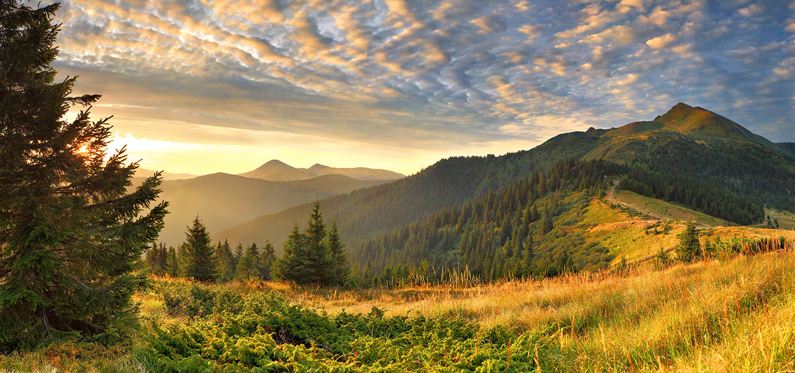
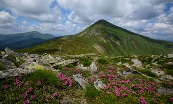

ГОЛОВНА|
НОВИНИ|
КОНТАКТИ
Улюблені гори
Гора Говерла. Висота — 2061 м

Говерла – найвища точка українських Карпат. Гора розташовується на межі Івано-
Франківської та Закарпатської областей. Одні із найпопулярніших поселень для старту
подорожі до вершини – Ворохта, Яремче та Верховина. Населені пункти розташовані за
рейтингом популярності серед туристів.
.jpg) Гора Бребенескул. Висота — 2032 м
Гора Бребенескул. Висота — 2032 м
Бребенескул височіє між ще двома вершинами Менчул і Ребра. Поблизу гори розташовується
найвисокогірніше озеро Карпат із однойменною назвою. Вершина практично не виступає із
Чорногорського хребта, яким прокладений трекінговий маршрут, а тому проходячи тут – її
можна й не помітити. Маршрут можна розпочати із села Шибене і також відвідати озеро
Марічейка, чи із села Дземброня та відвідати Дзембронс
VIKTORIIA BUZYNOVYCH
2026